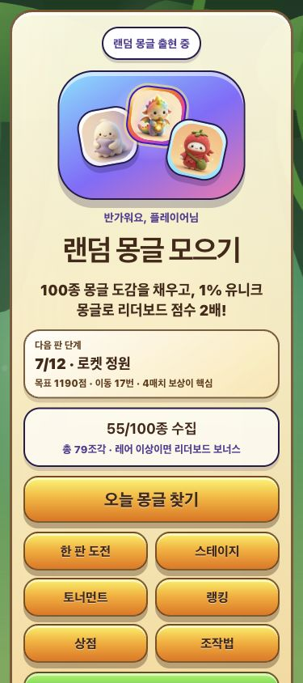
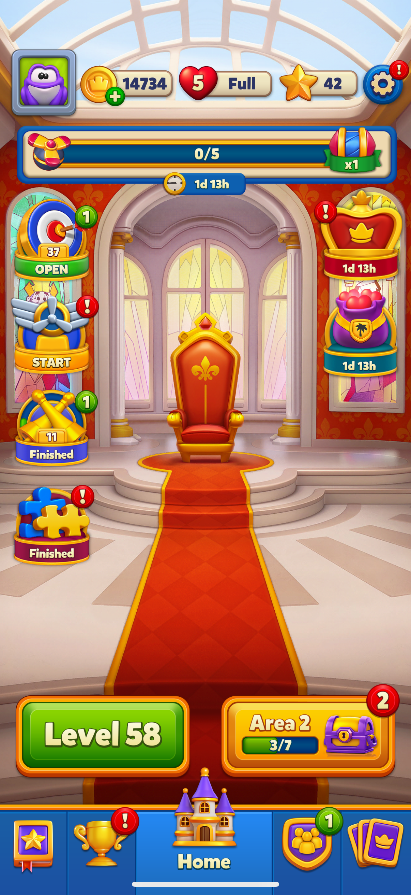
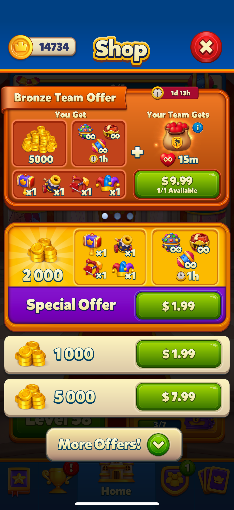
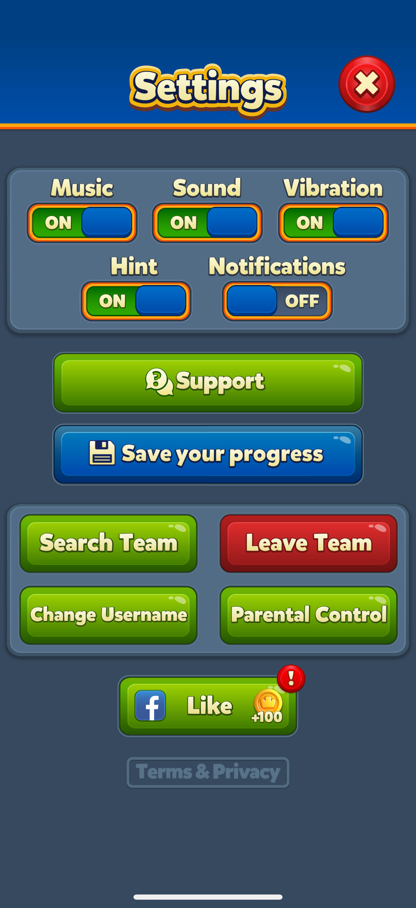
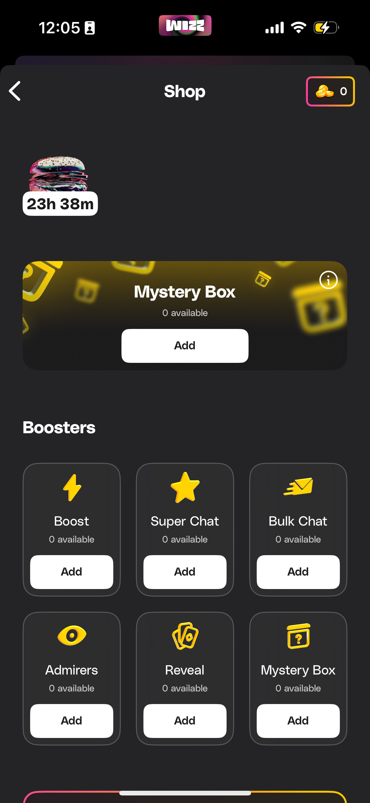
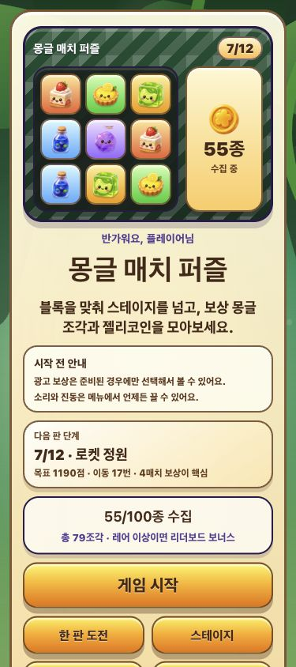
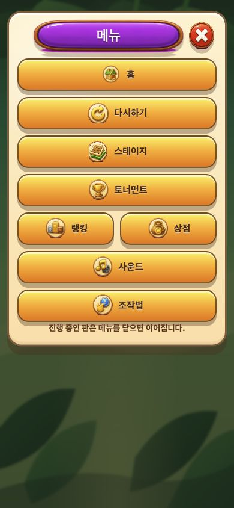
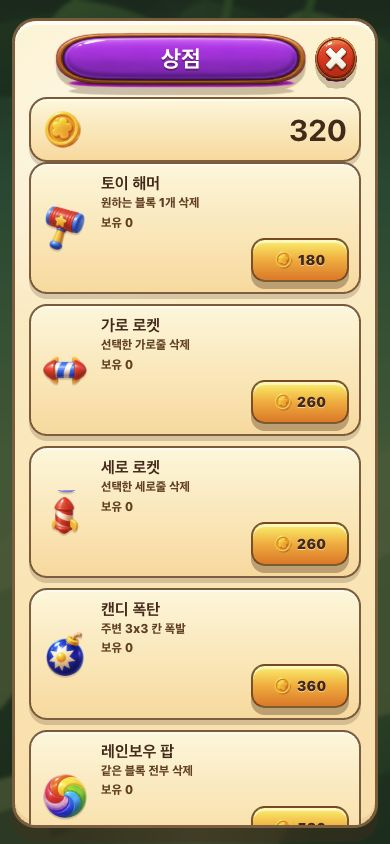
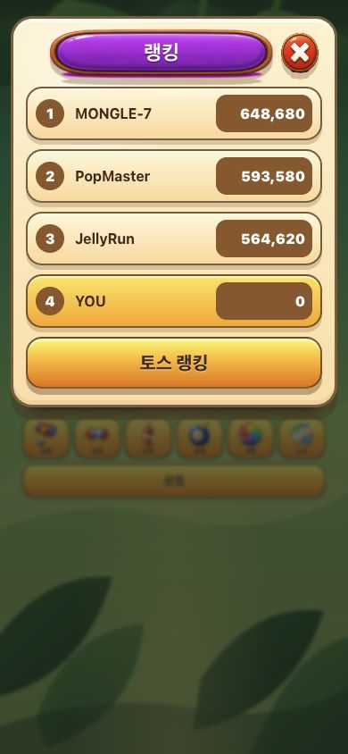

기존 홈
첫 화면이 수집/랜덤 몽글 중심이라 게임 시작 화면보다 도감 이벤트처럼 읽혔다. 단계 정보는 있지만 “게임을 지금 시작한다”는 신호가 약했다.
목표: 첫 화면을 일반 캐주얼 퍼즐 게임의 로비처럼 보이게 하고, 메뉴/상점은 이미지가 깨지거나 텍스트가 겹치지 않는 구조로 정리한다.
첫 화면이 수집/랜덤 몽글 중심이라 게임 시작 화면보다 도감 이벤트처럼 읽혔다. 단계 정보는 있지만 “게임을 지금 시작한다”는 신호가 약했다.

프로필/자원/이벤트/레벨 CTA를 한 화면에 배치한다. 홈의 핵심은 보상보다 “다음 레벨 시작”이다.

번들/코인/부스터를 별도 덩어리로 나누고, 가격 CTA를 독립된 버튼으로 둔다.

음악, 효과음, 진동은 토글 그룹으로 보여준다. 닫기 버튼과 타이틀은 겹치지 않게 충분히 분리되어야 한다.

아이콘과 텍스트, 보유량, 액션 버튼을 분리한 구조는 작은 화면에서도 읽기 쉽다.

단계 배지, 보드 미리보기, 시작 전 안내, “게임 시작” CTA를 첫 화면에 배치했다.

홈 버튼을 추가하고 타이틀/닫기 버튼/메뉴 버튼이 겹치지 않도록 패널 여백을 재정리했다.

아이템명, 설명, 보유량, 가격 버튼을 분리해 한글 줄바꿈이 가격 영역에 밀리지 않게 했다.

랭킹 패널과 사운드 패널이 모바일 폭에서 열리고, 가로 오버플로가 없는 것을 확인했다.
